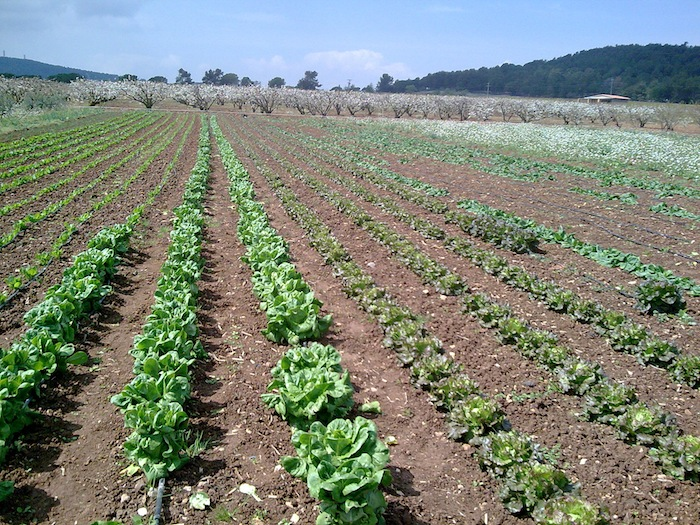
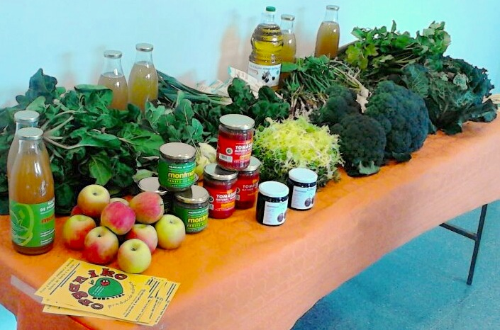
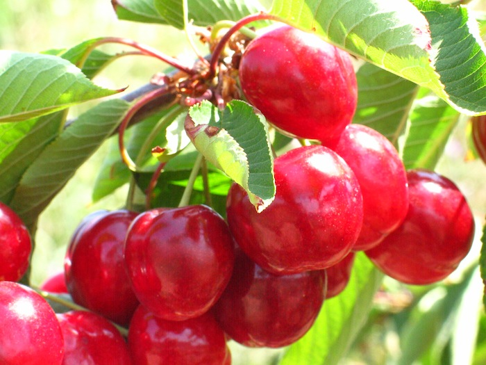
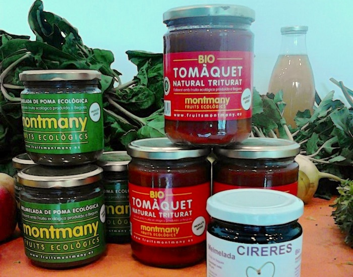
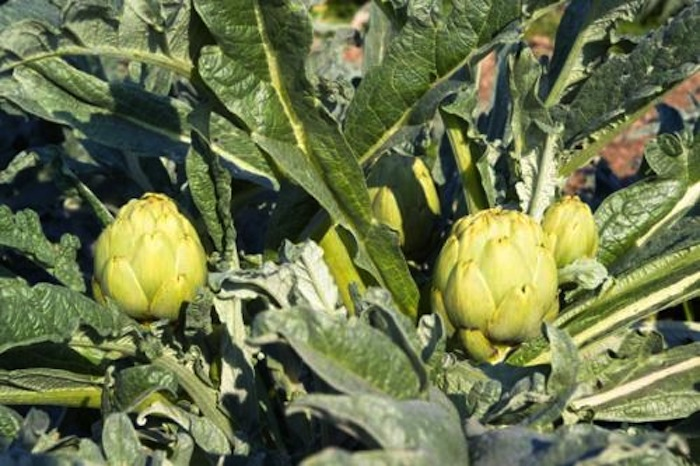
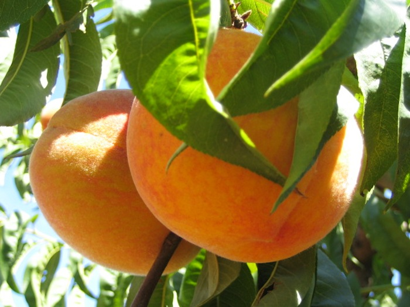
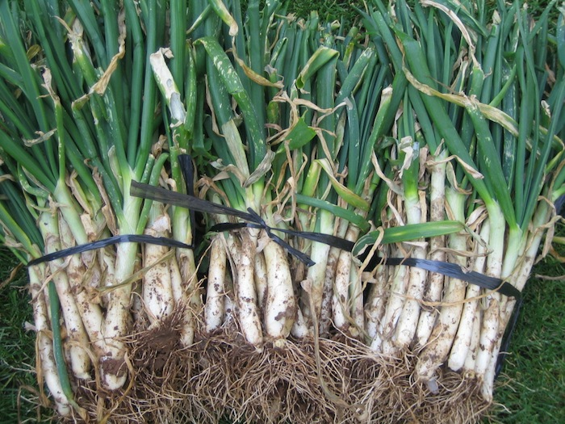

Organiko es un proyecto pensado para facilitar el contacto entre los pequeños productores ecológicos y el consumidor.
Hacemos repartos de cestas de productos ecológicos en Castelldefels, Gavá, Begues y alrededores. Nuestra verdura, frutas y otros productos son de temporada y cercanía, procedentes de los campos de la familia Montmany y de sus intercambios con otros agricultores ecológicos.
Un proyecto en crecimiento, con mucho corazón, para aportar un granito de arena en el cuidado de nuestra madre Tierra.
¿Cómo funciona?
Puedes mirar los productos disponibles, y efectuar tu primer pedido, en la zona de Pedidos de esta web.
Una vez hecho, cada viernes recibirás un correo electrónico en el que te enviamos un formulario con los productos de temporada de esa semana. Escoges en ese sencillo formulario tus productos. No tienes obligación de pedir cada semana ni una cantidad mínima.
Tu pedido lo puedes enviar como máximo el lunes siguiente a las 22:00, indicando tu nombre completo, dirección y horario de entrega, así como un teléfono de contacto. Los repartos los hacemos los jueves de 13:00 a 21:00. Al importe de tu pedido deberás añadirle 5 € en concepto de preparación de pedido y transporte.